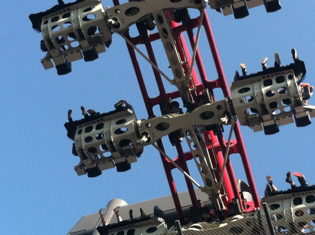

Hermit Falls 2012
All right. Its time for another cliff jumping. This time, we went to another new spot called Hermit Falls (Well, actually, it was only new to me. Everyone else went last summer while I was working). Anyways, yeah. Parking sucks here. And I mean REALLY sucks!!!!
All right. Time to hike on down to Hermit Falls.
Awesome!! I'd love to have live music while we're cliff jumping!!! Can you guys later bring a tuba to Tar Creek?
Ooh!! And free food too!!! =)
Umm...Which way is Hermit Falls?
Meh. Tar Creeks hike is much more intense.
What rolls down stairs? Alone or in pairs. Rolls over your neighbors dog.
Sweet. We made it to our first jumping spot!!!
 Hey look!!! A salamandar!!! Lets name him Joey!!!
Hey look!!! A salamandar!!! Lets name him Joey!!!
Why has Joey been suicidal ever since he met me?
Is it me or does this photo totally seem like an album cover of a crappy band trying to look cool?
All right. Time to start jumping.
Dude. Backwards Jumps feel so weird.
Yeah. Hermit Falls is really freaking nice.
DAMMIT DYLAN!!! STOP POSING!!!!!
That tree is freaking awesome.
We did a train down that slide. And yeah. It was awesome.
Doubles on the Rock Jump here!!!!
DYLAN AWAY!!!!!!
I knew they had a 50 fter here!!!! Must jump it now!!!!
Your cadaverous pallor betrays an aura of foreboding, almost as though you sense a disquieting metamorphosis.Is this jump actually stretching, or is it your imagination?
The water here is just like glass.
Hey, don't you start acting suicidal on me ladybug. I've already got Joey to worry about.
All right. For lunch, I decided to go out and lose my Five Guys Virginity. Yeah, I know it took my forever, and yes. They are amazing.
Look at me. I'm riding a bear.
 MUSH I SAY!!!!!! MUSH!!!!!!!
MUSH I SAY!!!!!! MUSH!!!!!!!

Yeah. We decided to make a quick stop at Six Flags Magic Mountain. Because how else do you top off an awesome morning of cliff jumping than by riding X2.
We rode Riddlers Revenge as well. It was running pretty damn well.
Hey Tidal Wave. Come and actually get us wet. We just went cliff jumping. We dare you!!!
Ugh. Green Lantern still sucks. =(
But in good news, Collosus is back to normal. They're no longer calling it Curly's Collosus.
What a great company this is. If you need money right now, just get a loan from these guys. Just scan now for fast approval. No need to check your credit score and make sure you're a responsible person who's financially responsible. We'll just give loans out like candy to everyone who walks by, regardless of if they're able to pay for them or not. Because activities like this have been absolutely WONDERFUL for our economy. Screw regulation, you want to get a loan, you got one. This is such a great company. And thank you Six Flags. Thank you for having such great and responsible companies represent your park. (End Sarcasm Mode)
Home